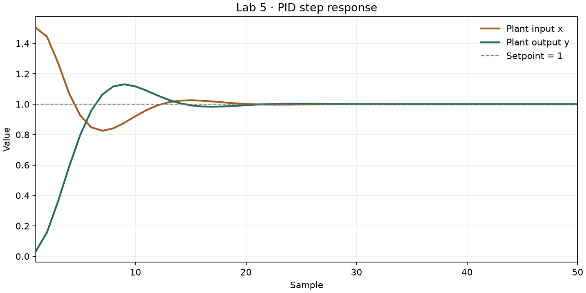

Calculate the next plant input from the target, current plant output, and remembered values from the last call.
To use fresh console output, paste the complete Y = [ ... ]; block into MATLAB, then run figure(1); plot(Y);.
| File | Purpose |
|---|---|
Controller.hpp | Supplied abstract base. Declares controlStep() and fixes deltaT = 1.0. |
PID_Controller.hpp | New derived class. Declares the constructor and override; stores settings and remembered values. |
PID_Controller.cpp | New method definitions. Initializes the settings and performs one PID calculation. |
Plant.hpp / Plant.cpp | Supplied plant model, unchanged. plantResponse(input) calculates the next output. |
ProportionalController.hpp / .cpp | Supplied simpler controller, unchanged. Kept as the course's reference implementation. |
controllerMain.cpp | Completed runner. Creates the plant and PID object, runs 50 steps, and prints input/output columns for MATLAB. |
Controller (abstract)
deltaT = 1.0
controlStep(plantOutput, setpoint) = 0
↑ public inheritance
PID_Controller
constructor(gain, integralTime, derivativeTime)
controlStep(plantOutput, setpoint) override
Plant
plantResponse(input)
main()
Controller* → PID_Controller object
controller calculates input → plant calculates output → repeat
The loop calls controller->controlStep(...) through a base pointer. Because the function is virtual, it runs the PID version. The PID object is local to main(); the pointer does not need delete.
| Member | Meaning | Initial value |
|---|---|---|
kc | Proportional gain | 0.5 |
tI | Integration time constant | 25 |
tD | Derivative time constant | 2.5 |
q | Leaky integral of error | 0 |
previousOutput | Plant output from the previous call | 0 (plant starts at rest) |
q and previousOutput are members so their values survive between calls. The constructor assumes the supplied valid settings; tI must be greater than zero because it is used as a divisor.
q and add 10% of the current error.error = setpoint - plantOutput;
q = 0.9 * q + 0.1 * error;
plantInput = setpoint + kc * (error + (deltaT / tI) * q
- (tD / deltaT) * (plantOutput - previousOutput));
previousOutput = plantOutput;The derivative uses the change in plant output, with a minus sign. The integral uses the updated q, not a running sum. Update previousOutput only after calculating the input.
First call: output is 0 and setpoint is 1. Error is 1, q becomes 0.1, and the returned input is 1.502.
The first column of Y is plant input; the second is plant output. The target is 1. The saved MATLAB script uses the program's verified 50-row output and plots both columns.

Preview generated from the C++ results with Matplotlib. Run plotResponse.m in MATLAB for the lab's requested MATLAB plot.
| Handout requirement | Included / checked |
|---|---|
| Write PID_Controller.hpp and PID_Controller.cpp | Both provided, with comments. |
| Implement the Controller interface | Public inheritance and the matching controlStep override. |
| Use the specified leaky integral and PID formula | Formula, update order, and saved state tested. |
| Run the supplied plant and settings | 50 steps, setpoint 1, kc 0.5, tI 25, tD 2.5. All 50 output rows match the supplied pidOutput.txt at its printed precision. |
| Plot the step response in MATLAB | plotResponse.m is ready to run; preview included. |
| Hand in the two documented PID files; show the plot | Submit the two PID files and run the MATLAB script to show your plot. |
C++ compiled and ran with Clang C++17 and memory/undefined-behavior checks. Additional checks cover consecutive calls, separate controller objects, zero gain, and zero error. Visual Studio and MATLAB were not available to execute here. The supplied Plant header retains its original initializer-order warning; the supplied support files are unchanged.